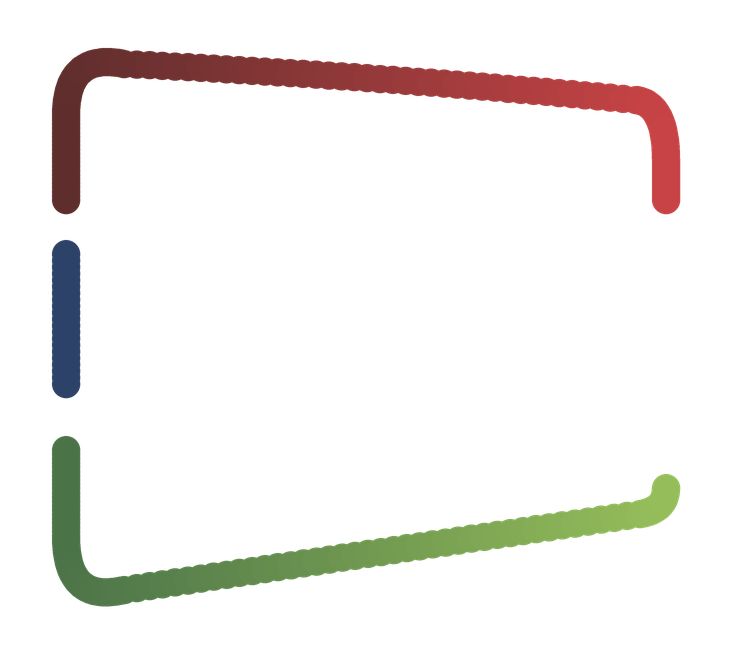

⇄
Conversor
↓
Downloader
×
Nova versão
Baixar
VideoImagem Downloader
Conversor
Arquivos
Adicionar…
Limpar concluídos
Limpar

Arraste os vídeos aqui
ou clique em “Adicionar…” · pode ser vários de uma vez
Configurações de saída
Formato
Predefinição
Ajustes avançados
—
Aceleração por hardware
Copiar stream quando possível
Limpar a fila ao terminar
Vídeo
Codec
Resolução
Taxa de quadros
Bitrate
Encaixe
Caber (barras)
Preencher (corta)
Esticar
Áudio
Codec
Bitrate
Sample rate
Canais
Comando ffmpeg
Pasta de saída…
Usar a pasta de origem
Converter
Cancelar tudo
Log do ffmpeg
Adicionar
Baixando
Concluídos
Nenhum download em andamento
Cole o link de um vídeo acima para começar.
—
×
▶
Baixar vídeo
♪
Baixar áudio
▣
Baixar imagem
Miniatura do vídeo (JPG)
T
Baixar legendas
Legendas
Este vídeo não tem legendas.
Usar estas escolhas sempre e não perguntar de novo
Sobre
×
VideoImagem Downloader